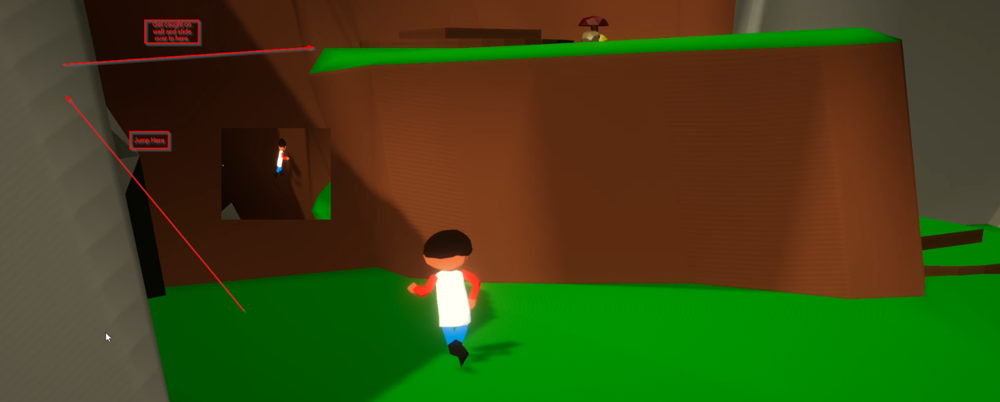
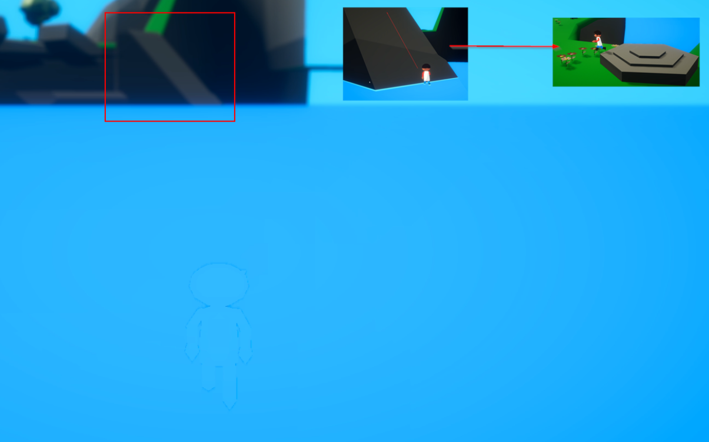

Note: This guide no longer works in the latest version.
This guide aims to help the developer improve the game and fix bugs. You may purchase Everett Isle here.
The time it took to complete the game (from hitting Continue until the screen fades out after touch the boat) took a total of 1 minute, 30 seconds and 40 milliseconds.
This speed-run uses 2 different glitches to work: Wall Jumping and Out of Bounds. On some angles walls, you can jump and get stuck on them, which will allow you to jump again. Also, some places on the map have points that will not reset your character back to land, so in some instances you can get stuck underneath the water. This will allow you to move around underneath the map.
In order to wipe your save and restart from the beginning:
New Game.Continue.You should find yourself at the very beginning of the game.
First, walk up to the rock near the first platform. Walk into this rock, jump twice to get caught in the wall then slide over on top of the first platform.
To get on top of the second platform, there is a sloped part of the wall that you can jump on. Get caught on it and jump again to get on top.
By this point you should see a gear objective machine. On the right side of the machine is a path to get to a western mining part of the map.
When you arrive at the western part of the map, turn left and you will see a wall next to the 3 pillar platform puzzle. Jump this wall until you jump over the top of it. You should then fall into the water and get stuck, which should allow you to move/hover around through the water.
Note: You should not reset when you touch the water here. If you do, try again.

After going out of bounds, look forward and you should see a large slope far away. Hover over to this slope and walk up it until you reset to the spawn near it.
After respawning, you should see 3 rocks in water in front of you. Jump over these 3 rocks to get to the slope where the entrance to the key room is. Enter the key room.
Once inside the key room, flip your character around (so you don't walk out of the key room by accident) and jump off the cliff past the key boxes. Since the water has no reset detection, you can go out of bounds again. Hover over to the boat and touch it to end the game.